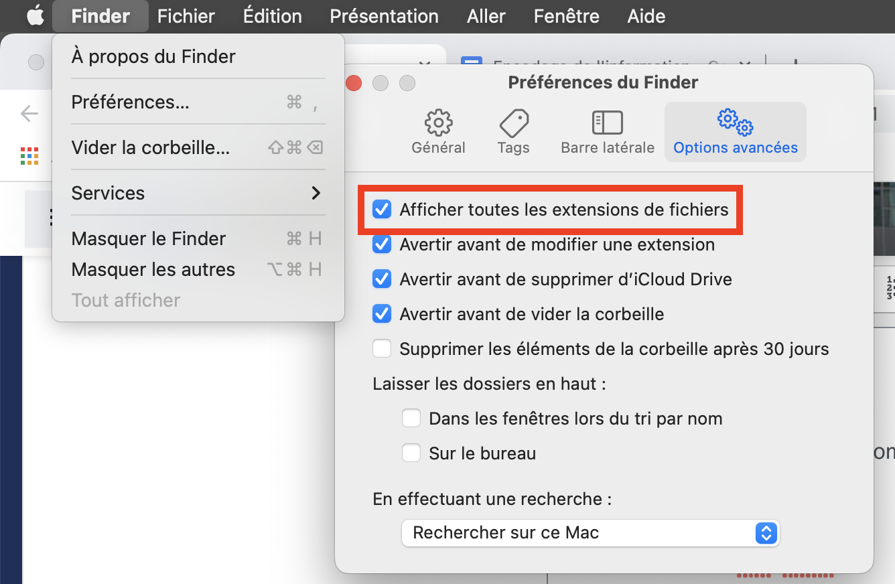

TP 3 : Tailles et compression
Contents
TP 3 : Tailles et compression#
Objectifs pédagogiques#
Être capable d’estimer la taille d’un fichier en fonction de son type et de son codage
Comprendre le processus de compression avec et sans perte
Introduction#
Réduire la taille de l’information à transmettre tout en s’assurant que l’on peut retrouver tout ou partie de l’information se fait tous les jours.
Exemple !#
Laura a utilisé 26 lettres, 5 espaces et un emoji pour dire :
Je n’en peux plus ! Je suis dans le même état que Chrysippe de Soles, philosophe stoïcien du IIIème siècle avant Jésus-Christ après avoir vu un âne manger ses figues, mais la cause m’en a complètement échappé
qui est certes beaucoup plus poétique, mais qui prend 172 caractères, 36 espaces et des signes de ponctuation.
Définition : compression de donnée#
La compression de données est l’opération informatique \(C()\) qui consiste à faire passer une suite de bits \(X\) en en suite de bits \(Y < X\) :
L’opération inverse \(C^{-1}()\) est appelée décompression de données:
Il existe deux types de compressions de données :
La compression avec perte d’information qui ne permet pas de retrouver, après décompression, la suite de bits non-compressée
La compression sans perte d’information qui permet de retrouver, après décompression, l’entier de la suite de bits non-compressée
Compression avec perte d’information#
La compression avec perte d’information est une opération complexe qui dépasse le cadre de ce cours. Elle fait appel à des outils mathématiques qui ne sont pas traités dans le cadre des études gymnasiales.
(La compression avec perte d’information ne sera pas évaluée lors d’un test :smiley: )
Compression sans perte d’information#
Il en existe plusieurs. Nous allons aborder le codage de Huffman.
Algorithme de Huffman#
Parmis les types de compression de donnée sans perte d’information, on trouve l’algorithme de Huffman. Il repose sur un modèle statistique.
Activité de magie#
Retrouver la lettre secrète

Définition : Taille d’un fichier#
La taille d’un fichier mesure la quantité de données du fichier. Elle se mesure en octets (à laquelle on peut ajouter un suffixe). Alternativement, elle donne une idée de la quantité de stockage requise pour le stocker.
Suffixes pour les grandes valeurs#
Dans le Système international d’unités, il est d’usage d’utiliser des préfixes que l’on ajoute avant l’unité.
Ainsi :
Nom |
Symbole (fr/en) |
Valeur |
|---|---|---|
Kilooctet |
ko (kB) |
\(10^{3}\) octets = 8 kb |
mégaoctet |
Mo (MB) |
\(10^{6}\) octets = 8 Mb |
gigaoctet |
Go (GB) |
\(10^{9}\) octets = 8 Gb |
téraoctet |
To (TB) |
\(10^{12}\) octets = 8 Tb |
pétaoctet |
Po (PB) |
\(10^{15}\) octets = 8 Pb |
exaoctet |
Eo (EB) |
\(10^{18}\) octets = 8 Eb |
zettaoctet |
Zo (ZB) |
\(10^{21}\) octets = 8 Zb |
yottaoctet |
Yo (YB) |
\(10^{24}\) octets = 8 Yb |
Attention : lorsqu’on parle de capacité, on préférera le terme français “octet” plutôt que byte qui est phonétiquement trop proche de bit
Estimation de la taille d’un fichier#
Fichier texte ASCII#
On sait que chaque caractère ASCII est codé sur 7 bits. Mais un ordinateur ne travaille qu’avec des octets. Ainsi, en comptant le nombre de caractères d’un fichier, on peut estimer sa taille.
Téléchargez le fichier texte suivant
Terminal : dans un terminal, on peut utilisé la fonciton wc qui donne le nombre exact de caractères d’un fichier. Par exemple : wc -c < AuClairDeLaLune.txt
Fichier image PPM et PGM#
Sur un fichier en niveaux de gris (PGM) et en couleurs (PGM), la taille du fichier peut être estimée avec la taille de l’image ainsi que le mode de codage des couleurs (\([0,1]\) pour \(P1\) donc 1 octet, \([0,...,255]\) pour \(P2\) donc 1 octet, \([0,...,255;0,...,255;0,...,255]\) pour \(P3\) donc 3 octets,
Télécharger l’image PPM en format PPM
Télécharger l’image PGM en format PGM
Fichier son#
Un fichier son non-compressé aura une taille multiple par la fréquence d’échantillonnage, la durée du morceau ainsi et le nombre de bits de la quantification.
Exercice 1 : fichier texte#
Télécharge le fichier texte
Il s’agit des Misérables de Victor Hugo, roman en 5 tomes regroupés ici dans un fichier
Quel pourcentage de caractères spéciaux (non ASCII) contient-il ? On suppose que Victor aurait aimé les emojis mais qu’il ne les connaissait malheureusement pas.
Mac OS fait des arrondis en Mo, faites attention d’utiliser le nombre exact d’octets
Plonger dans un fichier : éditer en hexadécimal#
Prise en main d’un éditeur hexadécimal
Découvrir que tous les fichiers sont faits de bytes
Découvrir les types de fichiers et le magic number
Comprendre le lien entre extension de fichier et programme qui va ouvrir le fichier
Découvrir quels types de fichiers sont robustes face a une modification / perturbation arbitraire.
Exercice 2#
Consignes#
Faites cet exercice par 2, sur un seul ordinateur, et discutez des résultats. A la fin, une discussion avec le reste du groupe où je vous demanderai ce que vous avez trouvé.
Dans le finder affichez les extensions de fichier :

Téléchargez cette archive et décompressez-la
Pour chaque fichier:
Ouvrez le dans Hex Fiend
Essayez de déterminer de quel type de fichier il s’agit. Regardez vers le début du fichier. Si vous ne voyez pas immédiatement de quel type il pourrait choisir, aidez vous de cette page wikipédia : Nombre magique.
Renommez le fichier pour lui attribuer la bonne extension, par exemple fichier1.pptx
Double cliquez sur le fichier renommé pour vérifier si vous avez trouvé la bonne extension (si ça ne marche pas, c’est que vous n’avez pas le bon format ou la bonne extension)
Note : si un fichier est trop difficile à identifier, passez alors au suivant.
Ensuite, pour chaque fichier renommé :
Essayez d’éditer le contenu du fichier en remplaçant quelques bytes vers le milieu du fichier
Vérifiez ce qu’il se passe quand vous essayez maintenant d’ouvrir le fichier
Réessayez avec différents types de modifications
supprimer un peu ou beaucoup de bytes
dupliquer certaines parties 2, 3, 10 fois…
Notez ce qui se passe pour chaque type de fichier
Faites des suppositions sur pourquoi les différents types de fichiers réagissent différemment
A la fin : discussion avec le reste de la demi classe
Exercice 2 : manipuler du son#
Le format MP3 est un format de compression avec perte d’information. A l’origine, il a été développé pour la radiodiffusion (le streaming).
Téléchargez les trois fichiers son présent sur le git
A l’aide de HexFiend, identifiez le début et la fin de la musique
A l’aide des opérations de copie et coller, reproduisez le jingle francophone 3 fois.
Ouvrez les autres jingle (italophone et germanique) et créez un nouveau fichier contenant les trois à la suite à l’aide d’HexFiend
Ressources supplémentaires#
from IPython.display import YouTubeVideo
YouTubeVideo('K2IQLk-BGuk', width=960, height=540)